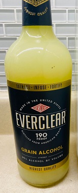

How to Make Limoncello
This is the best limoncello recipe ever!
Simple ingredients, quick to prepaer and amazingly delicious.
This limoncello turns out perfectly every single time.

Ingredients: unit g (NOT lb) FYI 1000g=1kg
- Organic lemon zest 40g
- Vodka (Everclear 95% ) 100g (=126cc=126ml)
- Granulated sugar 75g
- Leakwam Water 150g
Instructions
- Wash 3 lemons and peel the skin off each lemon.
- Use only the yellow part of the skin, which is called zest. Avoid using the white part.
- Place an empty bottle or container on a scale and set it to zero grams.
- Add all of the lemon zest to the bottle or container, and weigh it.
- If the weight of the lemon zest is 44g, then it is 10% more than 40g. Thus, add 10% more vodka, which is 110g.
- Cover the bottle or container with aluminum foil to keep it away from light. Alternatively, keep it in a dark place without any light for 2 days.
- Prepare the syrup by mixing 150g of lukewarm water with 75g of granulated sugar. Mix well until the sugar dissolves completely.
- After 2 days, strain the lemon zest using a tea strainer and pour the contents of the bottle or container into the syrup mixture.
- The milky white lemon cello is now ready. If you refrigerate it for a week, the flavors will blend more, resulting in a more delicious drink.
Nutrition Facts
Per Seving:
Serving Size: 1.5 fl oz.; Calories 103Kcal 6% ; Total Fat 0g 0% ; Saturated Fat 0g 0% ; Sodium 0mg 0% ; Total Carbohydrate 11g 5% ; Dietary Fiber 0g 0% ;Sugars 10.9g 15%